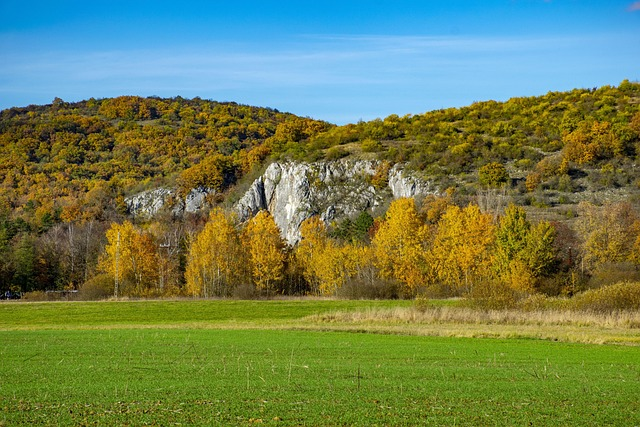

Magyarországon 10 nemzeti park működik, amelyek az ország legértékesebb természeti és kulturális területeit védik.
A magyar nemzeti parkok mindegyike tartogat olyan egyedülálló természeti vagy kulturális különlegességeket, amelyek világszinten vagy európai mércével is kiemelkedőek
nagy
szep
menő
| Nemzeti park neve | Terület | Alapítás éve |
|---|---|---|
| Hortobágyi Nemzeti Park | 809 km² | 1973 |
| Duna–Ipoly Nemzeti Park | 603 km² | 1997 |
| Balaton-felvidéki Nemzeti Park | 570 km² | 1997 |